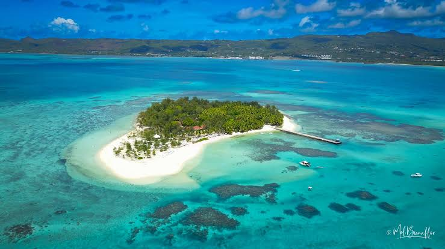

Lagoon & Snorkeling
Managaha Island
A small, uninhabited islet just off the western coast of Saipan surrounded by white sandy beaches, coral reefs, and calm turquoise waters ideal for snorkeling and parasailing.